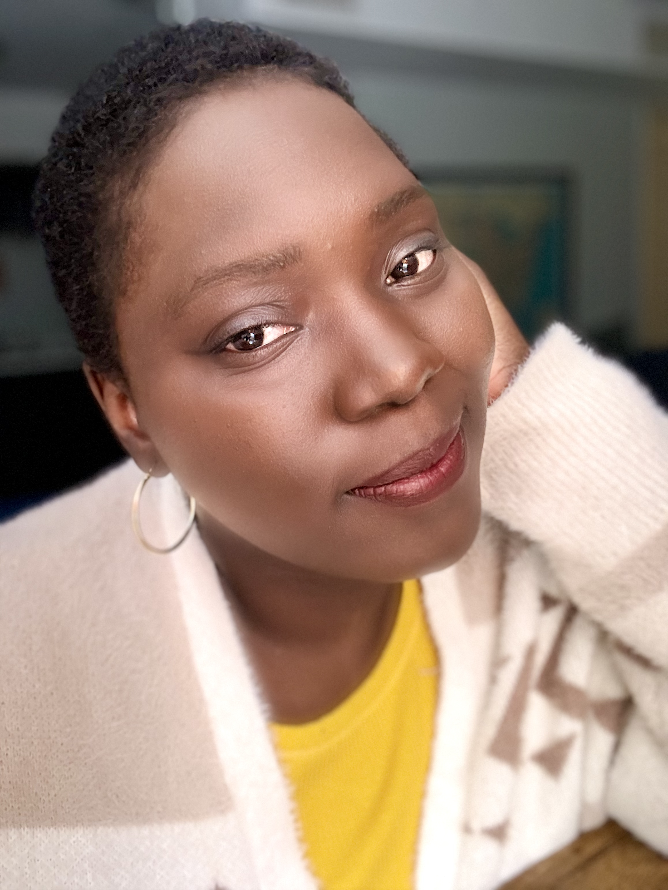
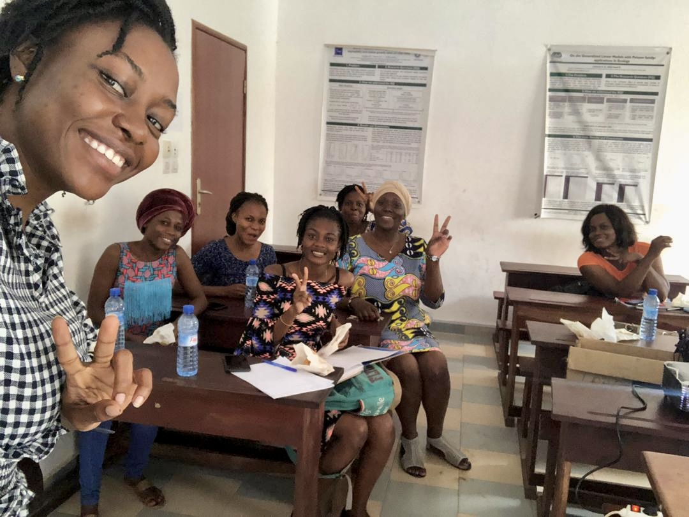
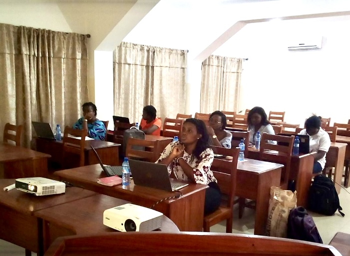

Nadejda Sero, the founder of the R Ladies Cotonou chapter, shared with the R Consortium her experiences learning R, the challenges of running an R community in a developing country, and her plans for 2024. She also emphasized the importance of considering the realities of the local R community when organizing an R User Group (RUG).

Please share about your background and involvement with the RUGS group.
My name is Nadejda Sero, and I am a plant population and theoretical ecologist. I have a Bachelor of Science in Forestry and Natural Resources Management and a Master of Science in Biostatistics from the University of Abomey-Calavi (Benin, West Africa). I discovered R during my Master’s studies in 2015. From the first coding class, I found R exciting and fun. However, as assignments became more challenging, I grew somewhat frustrated due to my lack of prior experience with a programming language.
So, I jumped on Twitter (current X). I tweeted, “The most exciting thing I ever did is learning how to code in R!” The tweet caught the attention of members of the R Ladies global team. They asked if I was interested in spreading #rstats love with the women’s community in Benin. I was thrilled by the opportunity and thus began my journey with R-Ladies Global.
The early days were challenging due to the novelty of the experience. I did not know much about community building and social events organization. I started learning about the R-Ladies community and available resources. The most significant work was adjusting the resources/tools used by other chapters to fit my realities in Benin. My country, a small French-speaking developing African country, had poor internet access and few organizations focused on gender minorities. (We are doing slightly better now.) On top of that, I often needed to translate some materials into French for the chapter.
As I struggled to make headway, the R-Ladies team launched a mentoring program for organizers. I was fortunate enough to participate in the pilot mentorship. The program helped me understand how to identify, adjust, and use the most effective tools for R-Ladies Cotonou. I also gained confidence as an organizer and with community work. With my fantastic mentor’s help, I revived the local chapter of R-Ladies in Cotonou, Benin. I later joined her in the R-Ladies Global team to manage the mentoring program. You can read more about my mentoring experience on the R-Ladies Global blog.

Happy members of R-Ladies Cotonou sharing some pastries after the presentation. At our first official meetup, the attendees discovered and learned everything about R-Ladies Global and R-Ladies Cotonou.
I am grateful for the opportunity to have been a part of the R-Ladies community these last six years. I also discovered other fantastic groups like AfricaR. I am particularly proud of the journey with R-Ladies Cotonou. I am also thankful to the people who support us and contribute to keeping R-Ladies Cotonou alive.
Can you share what the R community is like in Benin?
R has been commonly used in academia and more moderately in the professional world over the past 2-3 years. For example, I worked with people from different areas of science. I worked in a laboratory where people came to us needing data analysts or biostatisticians. We always used R for such tasks, and many registered in R training sessions. The participants of these sessions also came from the professional world and public health. I have been out of the country for a while now, but the R community is booming. More people are interested in learning and using R in different settings and fields. I recently heard that people are fascinated with R for machine learning and artificial intelligence. It is exciting to see that people are integrating R into various fields. There are also a few more training opportunities for R enthusiasts.
Can you tell us about your plans for the R Ladies Cotonou for the new year?
More meetups from our Beninese community, other R-Ladies chapters, and allies.
We are planning a series of meetups that feature students from the training “Science des Données au Féminin en Afrique,” a data science with R program for francophone women organized by the Benin chapter of OWSD (Organization for Women in Science for the Developing World). We have three initial speakers for the series: the student who won the excellence prize and the two grantees from R-Ladies Cotonou. The program is an online training requiring good internet, which is unfortunately expensive and unreliable. If you want good internet, you must pay the price.
R-Ladies Cotonou supported two students (from Benin and Burkina Faso) by creating a small “internet access” grant using the R Consortium grant received in 2020.

The meetup speaker is taking us through a review of the most practical methods of importing and exporting datasets in R. The attendees are listening and taking notes.
This next series of meetups will focus on R tutorials with a bonus. The speakers will additionally share their stories embracing R through the training. The first speaker, Jospine Doris Abadassi, will discuss dashboard creation with Shiny and its potential applications to public health. I hope more folks from the training join the series to share their favorite R tools.
I believe these meetups will assist in expanding not only the R-Ladies but the entire R community. I particularly enjoy it when local people share what they have learned. It further motivates the participants to be bold with R.
About “Science des Données au Féminin en Afrique“, it is the first time I know that a data science training is free for specifically African women from French-speaking areas. Initiated by Dr. Bernice Bancole and Prof. Thierry Warin, the program trains 100 African francophone women in data science using R, emphasizing projects focused on societal problem resolution. The training concluded its first batch and is now recruiting for the second round. So, the community has expanded, and a few more people are using R. I appreciate that the training focuses on helping people develop projects that address societal issues. I believe that it enriches the community.
As I said in my last interview with the R consortium, “In some parts of the world, before expecting to find R users or a vivid R community, you first need to create favorable conditions for their birth – teach people what R is and its usefulness in professional, academic, and even artistic life.” It is especially true in Benin, whose official language is French. English is at least a third language for the average multilingual Beninese. Many people are uncomfortable or restrained in using R since most R materials are in English. I hope this OWSD Benin training receives all the contributions to keep running long-term. You can reach the leading team at owsd.benin@gmail.com.
Our other plan is to collaborate with other R-Ladies chapters and RUGS who speak French. If you speak French and want to teach us something, please email cotonou@rladies.org.
Otherwise, I will be working on welcoming and assisting new organizers for our chapter. So, for anyone interested, please email cotonou@rladies.org.
Are you guys currently hosting your events online or in-person? And what are your plans for hosting events in 2024?
We used to hold in-person events when we started. Then, the COVID-19 pandemic hit, and we had to decide whether to hold events online. Organizing online events became challenging due to Cotonou’s lack of reliable internet access or expensive packages. As a result, we only held one online event with poor attendance. We took a long break from our activities.
Going forward, our events will be hybrid, a mix of in-person and online events. In-person events will allow attendees to use the existing infrastructure of computers and internet access of our allies. It also offers an opportunity to interact with participants. Therefore, I am working with people in Cotonou to identify locations with consistent internet access where attendees can go to attend the meetups. Online events will be necessary to accommodate speakers from outside of the country. It will be open to attendees unable to make it in person.
Any techniques you recommend using for planning for or during the event? (Github, zoom, other) Can these techniques be used to make your group more inclusive to people that are unable to attend physical events in the future?
The techniques and tools should depend on the realities of the community. What language is comfortable for attendees? What meeting modality, online or in person, works best for participants?
As mentioned earlier, I was inexperienced, and organizing a chapter was daunting. My mentoring experience shifted my perspective. I realized that I needed to adjust many available resources/tools. Organizing meetups became easier as I integrated all these factors.
For example, our chapter prioritizes other communication and advertisement tools like regular emails and WhatsApp. The group is mildly active on social media, where the R community is alive (X/Twitter, Mastodon). It is easier to have a WhatsApp group to share information due to its popularity within our community. We recently created an Instagram account and will get LinkedIn and Facebook pages (with more co-organizers). I would love a website to centralize everything related to R-Ladies Cotonou. Using emails is an adjustment to Meetup, which is unpopular in Benin. Getting sponsors or partners and providing a few small grants for good internet would help tremendously our future online events.
Adjusting helps us to reach people where they are. It is imperative to consider the community, its realities, and its needs. I often asked our meetup participants their expectations, “What do you anticipate from us?” “What would you like to see in the future?” Then, I take notes. Also, we have Google Forms to collect comments, suggestions, potential speakers, contributors, and preferred meeting times. It is crucial to encourage people to participate, especially gender minorities less accustomed to such gatherings.
I have also attempted to make the meetups more welcoming and friendly in recent years. I always had some food/snacks and drinks available (thanks to friends and allies). It helps make people feel at ease and focus better. I hope the tradition continues for in-person meetups. It is valuable to make the meetups welcoming and friendly. How people feel is essential. If they come and feel like it is a regular lecture or course, they may decide to skip it. But, if they come to the meetup and learn while having fun, or at the very least, enjoy it a little, it benefits everyone.
These are some of the key aspects to consider when organizing a meetup. It is critical to consider the people since you are doing it for them. Also, make sure you have support and many co-organizers if possible.
All materials live on our GitHub page for people who can’t attend physical events. Another solution would be recording and uploading the session on the R-Ladies Global YouTube or our channel.
What industry are you currently in? How do you use R in your work?
I am now a Ph.D. student in Ecology and Evolutionary Biology at the University of Tennessee in Knoxville.
R has no longer been my first programming language since I started graduate school. I still use R for data tidying data analysis but less extensively. I worked a lot with R as a master’s student and Biostatistician. It was constant learning and growth as a programmer. I had a lot of fun writing my first local package. However, I now work more with mathematical software like Maple and Mathematica. I wish R were as smooth and intuitive as this software for mathematical modeling. I like translating Maple code to R code, especially when I need to make visualizations.
I am addicted to ggplot2 for graphs. I love learning new programming languages but am really attached to R (it’s a 9-year-old relationship now). I developed many skills while programming in R. R helped me become intuitive, a fast learner, and sharp with other programming languages.
My most recent project that utilized R, from beginning to end, was a project in my current lab on the evolutionary strategies of plants in stochastic environments. We used R for demographic data tidying and wrangling. Data analysis was a mix of statistical and mathematical models. It was a good occasion to practice writing functions and use new packages. I enjoy writing functions for any task to automate repetitive tasks, which reduces the need for copying and pasting code. I also learned more subtleties in analyzing demographic data from my advisor and colleagues who have used R longer.
How do I Join?
R Consortium’s R User Group and Small Conference Support Program (RUGS) provides grants to help R groups organize, share information, and support each other worldwide. We have given grants over the past four years, encompassing over 68,000 members in 33 countries. We would like to include you! Cash grants and meetup.com accounts are awarded based on the intended use of the funds and the amount of money available to distribute.